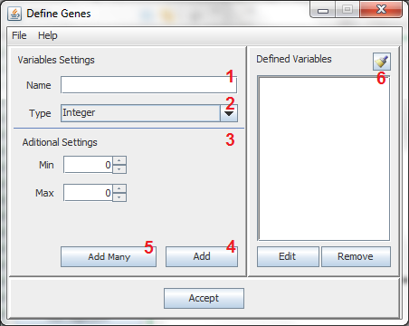

By clicking the Define Genes in Chromosome Define section, opens a window like the one shown:

Each number implies a step in the definition of the genes
Define Name of the Gene
Define Type of the Gene
Aditional Configuration
Add
Add Many
Defined Variables